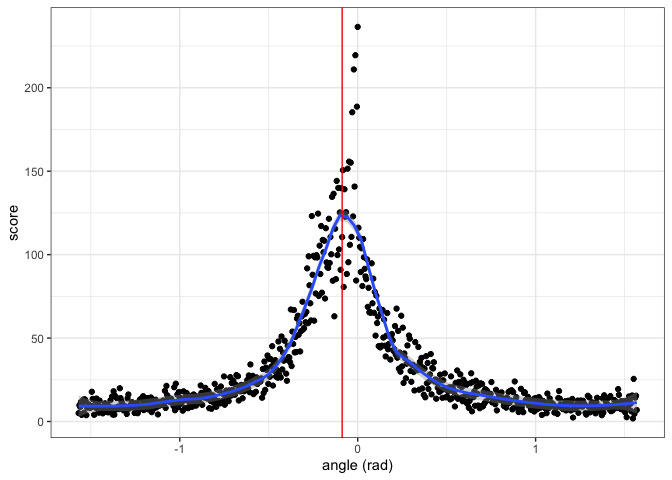
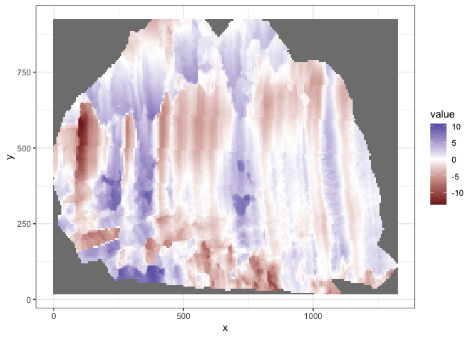
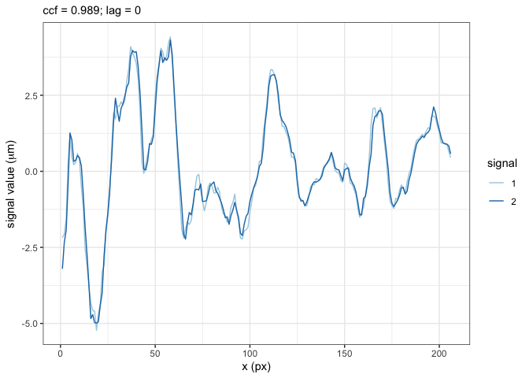

The goal of wire is to provide a systematic reproducible automatic algorithm to analyze the similarity between wire cut scans.
Installation
You can install the development version of wire from GitHub with:
# install.packages("devtools")
devtools::install_github("YuhangTom/wire")Usage
Data
The original scans for the wire cuts are stored in x3p format of width around 2300 and height around 1800, under a resolution 0.645μm × 0.645μm, with each file being at least 15 MB, which is much larger compared to the file limit of 5 MB for a R package. Therefore, we subsampled the original scans by a factor of 10, and saved them as x3p_subsamples in the package. The data can be used by:
Inner polygon
To remove the edge effect, we extract the inner part of the scan, which can be achieved by:
x3p <- x3p_subsamples[[1]]
insidepoly_df <- x3p_insidepoly_df(x3p, mask_col = "#FF0000", concavity = 1.5, b = 1, ifplot = TRUE)
attr(insidepoly_df, "x3p_plot")
attr(insidepoly_df, "number_of_missing_immediate_neighbors_plot")
attr(insidepoly_df, "standard_deviation_of_non_missing_immediate_neighbors_plot")
attr(insidepoly_df, "number_of_missing_immediate_neighbors_boxplot")
Remove trend
To remove the overall trend on the inner surface, we can use:
x3p_inner_nomiss_res <- df_rmtrend_x3p(insidepoly_df)
x3p_inner_nomiss_res
#> x3p object
#> size (width x height): 239 x 172 in pixel
#> resolution: 6.4500e+00 x 6.4500e+00Imputation
We can impute the missing values inside the surface by:
x3p_inner_impute <- x3p_impute(x3p_inner_nomiss_res, ifout = TRUE, ifsave = FALSE, dir_name = NULL, ifplot = TRUE)
attr(x3p_inner_impute, "x3p_impute_0_plot")
attr(x3p_inner_impute, "x3p_impute_1_plot")
attr(x3p_inner_impute, "x3p_impute_n_plot")
Rotation
We can rotate the surface to the correct angle by:
x3p_bin_rotate <- x3p_vertical(x3p_inner_impute, min_score_cut = 5, ifplot = TRUE)
attr(x3p_bin_rotate, "nfline_red_plot")
attr(x3p_bin_rotate, "MLE_loess_red_plot")
attr(x3p_bin_rotate, "nfline_blue_plot")
attr(x3p_bin_rotate, "MLE_loess_blue_plot")
Signal extraction
To extract signals from the rotated surface, two methods are provided, implemented by wire::x3p_raw_sig_df and wire::x3p_shift_sig_df, respectively:
raw_sig_df <- x3p_raw_sig_df(x3p_bin_rotate, ifplot = TRUE)
attr(raw_sig_df, "sig_df_plot")
shift_sig_df <- x3p_shift_sig_df(x3p_bin_rotate, ifplot = TRUE)
attr(shift_sig_df, "x3p_before_shift_plot")
attr(shift_sig_df, "x3p_after_shift_plot")
attr(shift_sig_df, "sig_df_plot")The signals and hooks can be further smoothed and removed by:
Signal alignment
Extracted signals can be aligned, and the cross-correlation can be computed:
aligned <- vec_align_sigs_list(raw_sig_df$sig, shift_sig_df$sig, ifplot = TRUE)
attr(aligned, "sig_align_plot")